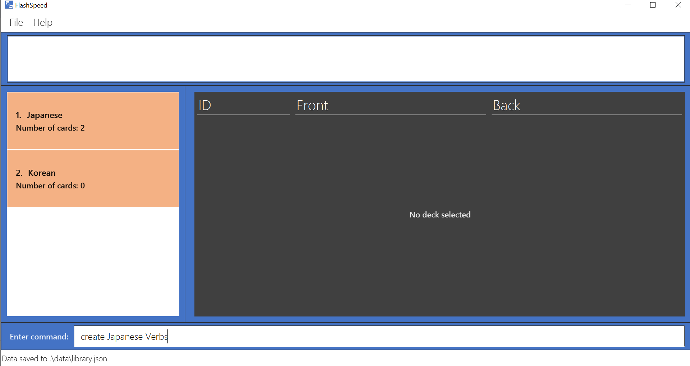
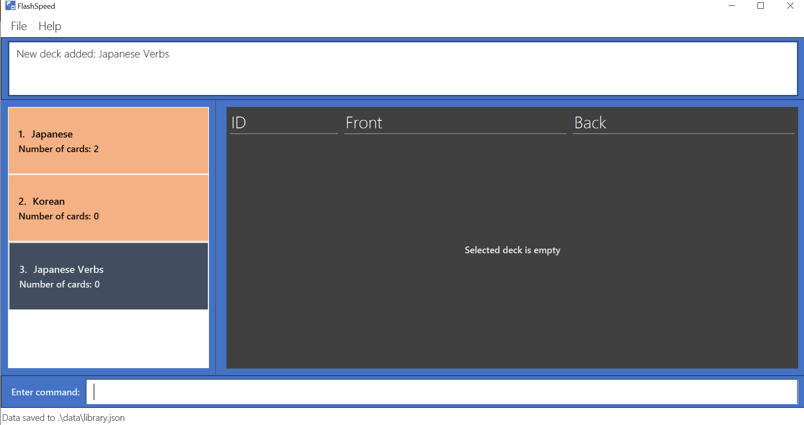
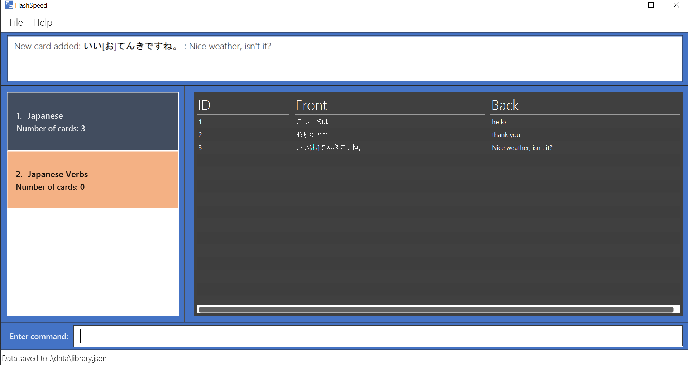

Overview
FlashSpeed is a text-based flashcard application specifically designed for university students who are learning a foreign language. University students often have hectic schedules. With this in mind, FlashSpeed was created to allow students to be able to study and revise foreign vocabulary on the fly.
Summary of contributions
-
Major enhancement 1: designed the architecture of the app.
-
What it does: creates the backbone structure of the application.
-
Justification: This contribution is critical to the development of the product because it created the basic structure of the app as well as designed the logic of the application, so that different features could be developed simultaneously.
-
Highlights: This contribution sets the tone of the application. It required an in-depth analysis of how the application should work in the future. The implementation too was challenging as it required making high-level design choices.
-
Credits: Some of the high-level structure of FlashSpeed is inspired by Anki, a digital flashcard application.
-
-
Major enhancement 2: added the ability to generate statistics after every game session.
-
What it does: allows the user to look at the statistics related to the game session that he/she played.
-
Justification: This feature increases the usage rate of the app, because it provides a feedback on the performance of the user. By quantifying the performance, this gives user motivation to do better in subsequent game sessions. Thus, the user will start more game sessions and hence the app usage time will increase.
-
Highlights: The difficulty was manageable, as most of the enhancement was essentially arithmetic manipulation.
-
-
Major enhancement 3: added the storage function to the app.
-
What it does: allows the user to save and load the decks of cards created by the user to a local directory. Preceding undo commands can be reversed by using the redo command.
-
Justification: This feature improves the usability of the product significantly because a user needs to be able to retrieve the decks of cards that he/she has created in the past.
-
Highlights: This enhancement requires an deep understanding of how JSON files and the Jackson library. The implementation was quite challenging as there are quite a few layers of abstraction in the storage system implemented by the original project that FlashSpeed is built upon.
-
-
Minor enhancement: Implemented the library class that contains the decks of cards along with another teammate, LiXin.
-
Code contributed: [Functional and Test code]
-
Other contributions:
-
Project management:
-
Enhancements to existing features:
-
Documentation:
-
Community:
-
Tools:
-
Integrated a third party library (Jackson) to the project (#119)
-
-
Contributions to the User Guide
Given below are sections I contributed to the User Guide. They showcase my ability to write documentation targeting end-users. |
Creating a deck : create
Format: create <deck>
After downloading and setting up FlashSpeed, you’re all set to go! But before anything else, you will have to first create a deck. The process of creating a deck in FlashSpeed is easy.
Let’s say you want to create a deck to revise some Japanese verbs to prepare for your upcoming test. To do so:
-
Firstly, type
createfollowed by the deck name into the input box.-
e.g.
create Japanese VerbsFigure 1. Typing the command to create the Japanese Verbs deck.
-
-
Press Enter.
-
Voila!
Figure 2. After creating the Japanese Verbs deck.
Adding a card : add
Format: add <front>:<back>
Alright, after creating a new deck and giving it a great name, what’s next? Adding cards into the deck, of course!
Once again, the process is easy:
-
Select the deck to which you want to add cards, with the
selectcommand.e.g.
select 1 -
Inside the input box, type:
-
add, followed by -
the word/sentence that you want as the
frontof the card, then -
a colon ":" right after, and finally
-
the word/sentence that you want as the
backof the card.e.g.
add ありがとう:thanks
-
-
Press Enter.
-
Voila!
Figure 3. Adding a new card into the Japanese deck.
Contributions to the Developer Guide
Given below are sections I contributed to the Developer Guide. They showcase my ability to write technical documentation and the technical depth of my contributions to the project. |
Storage component
API : Storage.java
The Storage component,
-
can save
UserPrefobjects in JSON format and read it back. -
can save all the decks and cards created in JSON format and read them back.
Creating a Deck
Current Implementation
The create command allows user to create a new Deck in the current Library.
Accepted syntax: create DECK_NAME
This functionality is implemented by getting the Deck based on the index provided. Subsequently, the Card(s) that belongs to the selected Deck will be displayed on the right panel via a TableView.
Validation and extraction of input in parser
The validation of the arguments in the create command is performed in CreateDeckCommandParser#parse(). It ensures
that the user has entered a non-null deck name.
In CreateDeckCommandParser#parse(), the DECK_NAME of is extracted
from the arguments in the create command. The DECK_NAME is converted to a Name object. An CreateDeckCommand
object is then constructed with the Deck name as its parameter.
Execution of Command object
When CreateDeckCommand#execute() is executed, an empty Deck with the Name parsed in the CreateDeckCommand will be
created when the Model Manager invokes the ModelManager#selectDeck() command.
After that, ModelManager#setSelectedDeck() method will be called to update the UI and display the Deck content
on the right panel. Lastly, the name of the selected Deck will be displayed together with the
MESSAGE_SUCCESS on the ResultDisplay panel.
Design Considerations
Aspect: If the user is already viewing another deck and decides to create a new deck, there was a consideration whether to switch the UI for the user view to the new deck or continue to let the user view the current deck.
-
Alternative 1 (current choice): Switch the view to the new Deck
-
Pros: Able to use the new Deck immediately without typing an additional command to select it.
-
-
Alternative 2: Keep the view at the current Deck
-
Pros: Don’t have to type in an additional command to return back to the current Deck if a new Deck is created
-
We chose Alternative 1 in the end as we believed that it will be more likely for the user to want to use the new deck immediately after creating it.
Aspect: Naming convention of command key words.
Initially, both CreateDeckCommand and AddCardCommand share the same keyword, which is the add keyword.
In order to distinguish these two commands from each other,
the Model Manager will check if any deck is currently selected.
If there is, AddCardCommandParser#parse() will be called to parse the arguments.
Otherwise, CreateDeckCommandParser#parse() will be called.
The benefit of this design is that it results in fewer number of command words. This helps the user on the navigability of the application due to a few number of command words to remember.
However, the glaring disadvantage is that unexpected outcomes are more likely to occur. For example, assume that the user wants to create a new deck. So, he/she types in the following command:
create Deck 2
However, the user has forgotten that a deck is currently being selected.
Therefore, the AddCardCommandParser#parse() will be invoked.
This is certainly not the expected outcome that the user has expected.
And so, our team has decided to implement the current approach, which is to assign different keywords to these two different feature.
Creating a Card
Current Implementation
The add command allows user to create a new Card in the current Deck.
Accepted syntax: add FRONT_VALUE:BACK_VALUE
This functionality is implemented by getting the Deck based on the current deck selected.
The Model Manager will be responsible of keeping track of the current deck.
Subsequently, the Model Manager creates a new card adds it to the current Deck.
The display on the right panel will be updated via updating the TableView.
Validation and extraction of input in parser
The validation of the arguments in the add command is performed in AddCardCommandParser#parse(). It ensures
that the user has entered a non-null front value as well as a non-null back value.
The lack thereof will cause a InvalidFaceValueException to be thrown.
In AddCardCommandParser#parse(), the FRONT_VALUE and the BACK_VALUE are extracted
from the arguments in the add command.
Both values will be converted to a FrontFace object and a BackFace object respectively.
A AddCardCommand object is then constructed with the 'FrontFace' and 'BackFace' objects as its parameters.
Execution of Command object
When AddCardCommand#execute() is called, a Card object with the FrontFace and BackFace
parsed in the CreateDeckCommand will be
created when the Model Manager invokes the ModelManager#addCard() command.
After that, ModelManager#setSelectedDeck() method will be called to update the UI and display the Deck content
on the right panel. Lastly, the name of the selected Deck will be displayed together with the
MESSAGE_SUCCESS on the ResultDisplay panel.